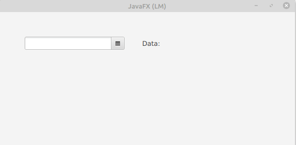

DatePicker permet seleccionar la data del calendari emergent o escriure el text manualment en el camp de text del selector de data.
Els constructors de la classe DatePicker són:
Mètodes d’ús comú:
En el següent exemple es crea un datePicker i se li asigna el dia, mes i any a un label. Per extraure aquestos tres valors utilitzem:

// Per utilitzar botó similar a SplitMenuButton
colorPicker.getStyleClass().add("split-button");
// Per utilitzar botó similar a MenuButton
colorPicker.getStyleClass().add("button");